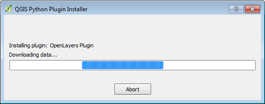
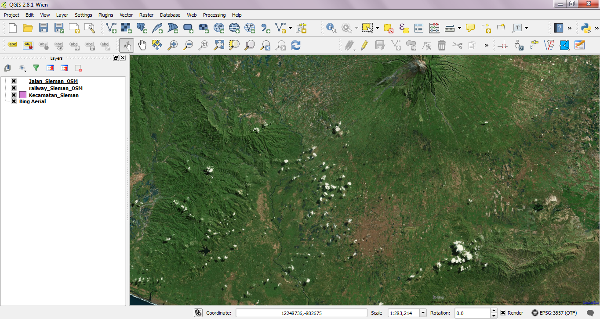

Module 4: QGIS Plugins¶
Learning Objectives
Understand the concept of plugins
Install QGIS plugins
Add satellite imagery via OpenLayers
QGIS has core functionality, which we will continue to explore in this guide, but it also allows the use of plugins, which add functionality to the software. Again, these plugins are free. To use them, we simply need to connect to the internet and install. In this module we will learn how to install QGIS plugins, using one plugin to add a satellite imagery layer to our QGIS project.
If you have closed QGIS since completing the previous module, start QGIS and open the project
named sleman_2_3.qgsin theqgis/folder.
Note that you must be connected to the internet to follow the exercises in this module.
1. Managing plugins¶
To install new plugins, they first need to be downloaded and activated. Some plugins are already downloaded and available.
Go to to view them.
This displays a list of plugins that have already been downloaded and can be activated. To enable a plugin, check the box next to it in this menu. For now, let’s leave all the plugins as they are. We’re going to download and activate a new plugin in the next section.
2. Installing plugins¶
There are many more plugins, but they must first be downloaded. To download a plugin, click the Not installed tab. This will load available plugin repositories, and you will see a list of all available plugins for download.
Note that plugins, which have already been downloaded can be activated or deactivated from the Installed tab. If it has not yet been downloaded, downloading a plugin from the Not installed tab will automatically activate it.
3. The OpenLayers plugin¶
The OpenLayers plugin allows you to view various web maps as a layer in QGIS. This means that you can access the OSM slippy map, Google Maps and Bing Maps from within QGIS. Follow along and we’ll see how this works.
Go to and click on the Not installed tab. Type openlayers into the Search box.
Select OpenLayers Plugin from the list and click Install plugin.
It may take a few minutes to download.
When the download finishes click OK.
Now the OpenLayers plugin is installed and activated. Click the Installed tab to see it in your list of active plugins. Click Close when you are finished.
The new plugin provides a menu which offers extra functionality. Go to to see various map layers that can be loaded.
Go to . A new layer called “Bing Aerial” will be added to the Layers panel, and the imagery will load in the map canvas. If the layer is above your other layers, drag it to the bottom of the layers list.
Your project should now look like this:
If you pay attention, there is something wrong with the map. Can you guess what it is? All three layers above Bing Aerial layers should be shown on the map.
To fix this, go to and check the box next to .
The Layer order panel will appear next to the Layers panel (1). Click it and uncheck Control Rendering Order (2).
Return to the Layers panel. The map layers should now appear in the correct order. All layers above Bing Aerial will show up on the map canvas as in the image below.
Adding a layer such as Bing Aerial will change the Coordinate Reference System, or CRS, of your project. Essentially this means that your project is not using longitude and latitude coordinates anymore. This shouldn’t affect you right now, but it will make sense later when we cover CRSes.
If the map data does not appear to match up correctly with the aerial imagery, it may be due to different CRSes. You can fix this problem by going to and checking the box next to Enable ‘on the fly’ CRS transformation.
Great! Now we can see our map data on top of an aerial photograph of the Earth. Note that this is the same imagery provided by Microsoft Bing that you would load for editing in JOSM. Try unchecking the box next to the layer Kecamatan_Sleman so that you can see the area better. Zoom in close to see detailed imagery with our street and railway layers displayed on top.
Remove the Bing Aerial layer by right-clicking it in the Layers panel and clicking Remove.
Try out other layers that are available from the menu.